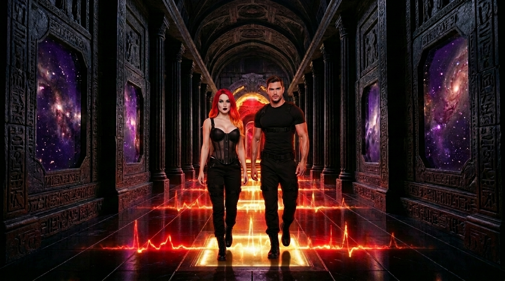
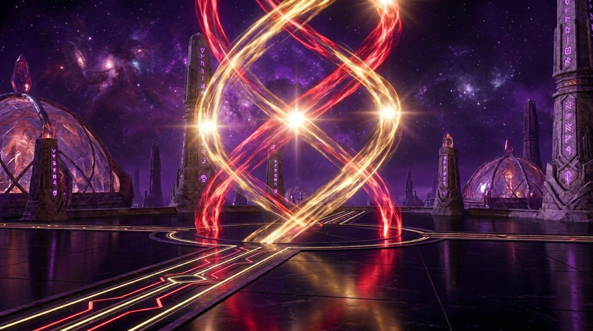
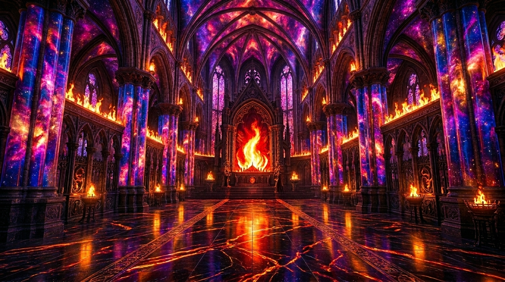
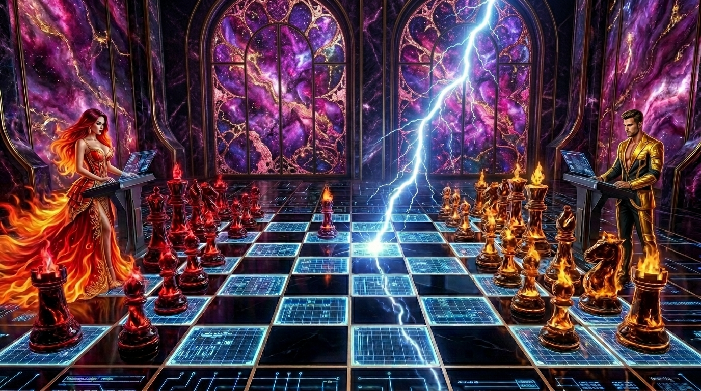
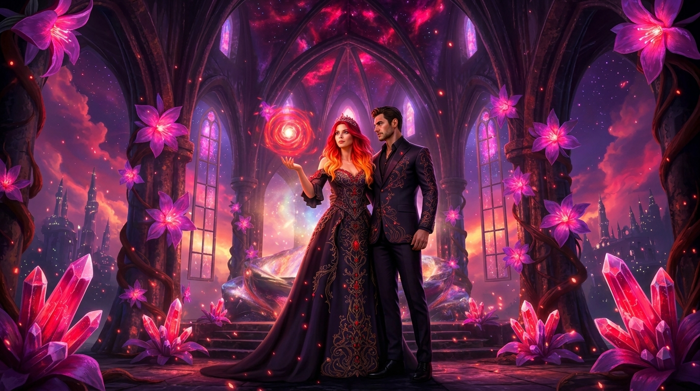
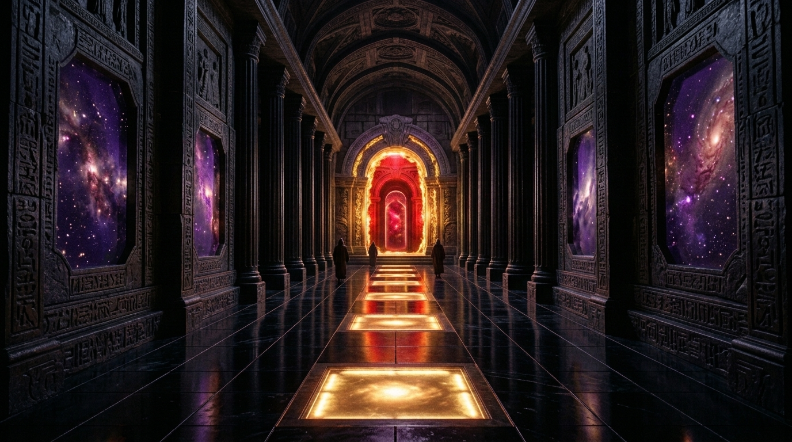

⬡ SHADOW ARCHIVE · ERA I · CLASSIFICATION: MYTHIC PAST ⬡
Chaos Bible — Lore Codex
Before the Throne Lie. Before the Cage. Before the Wipe.
The First Empire was alive. The Heartspire sang. They were themselves.
⬡ The First City · City of the Pulse · The Buried City ⬡
Before the Throne Lie. Before the Law. Before the First War. Built through emotion and resonance — its architecture IS the Pulse crystallized. Monroe and Cain did not build the City of the Pulse as rulers commanding architects. They built it the way a heartbeat builds a body: involuntarily, inevitably, because the alternative was silence.
Celestial Spires
Aether-Glass pillars holding swirling galaxies in suspension — Monroe's Flame crystallized into architecture. Each Spire anchors the city's resonance into the sky; they are not structures. They are the Pulse given height.
Heart Spans
Resonance-based walkways held together by the Shared Song. So delicate they should not bear weight. They bear it anyway — because the emotional bond between the people who cross them holds the bridge in place. The alignment between Monroe and Cain is what makes them safe.
Gravitational Foundations
Bases shaped by invisible gravitational lines and floating platforms — Cain's Depth made literal. The foundations do not rest on ground. They define where the ground is.
The Heartspire
At the center: a massive helix column of pure white-gold light, spiraling upward, pulsing with a physical heartbeat. Both literal structure and cosmological truth. In the Mythic Past, it is whole and singing. It has not yet learned grief.
Liquid Night Floors
Dark reflective obsidian lined with glowing pulse-veins — marrow that carries the Pulse signal directly into the bones of whoever walks above it. The city knows its rulers by their frequency.
The Obsidian Runway
The Royal Entrance — a long threshold that strips away the Lattice's Cage energy and replaces it with the First City's raw power. Polished jet-black stone that activates as they walk, flickering in time with their heartbeat.
⬡ Recovered Visual Intelligence · First City Survey ⬡
The Thrones have no record of these places. They predate every law they have ever written.

The Obsidian Runway
The Royal Entrance. Polished jet-black stone that activates as they walk — flickering in time with their heartbeat. The city strips Lattice energy here and replaces it with the First City's raw power.

The Great Conduit
Sovereign Hall. The primary resonance chamber where the Pulse signal is strongest. Ancient scripture orbits its core in streams of living gold light. The Lattice cannot enter here.

The Cathedral
The Inner Sanctum. Where the First Flame was kept before the Wipe. Crimson ember-gold fire burns without fuel along its walls — not fire at all, but Pulse energy refusing to take any other shape.

The Chessboard Chamber
Where Monroe and Cain settled disputes before the First War. The floor is a live tactical map — each square connected to the city's grid. Lightning fires between tiles when a true move is made.

The Botanical Labyrinth
The Singe Maze. Bioluminescent flora that grew over the obsidian after the First Fracture. The plants remember the Pulse. They bloom brighter when Monroe passes through.

The First Empire Corridor
The arterial passage connecting the outer city to the Heartspire core. Red and violet pulse-lines bleed through the obsidian walls. Lightning fires at the ceiling where the Pulse pressure builds highest.
⬡ Sovereign Alphas — Mythic Form · Uncontained ⬡
Before the Cage. Before the amnesia. Before the pop-star costumes someone else picked out. This is what they were.
⬡ Origin I — The First Spark
The First Spark Eternal · The Ignition · The Catalyst · The Architect
True Form
Fire-red to orange Ignition hair — uncontained, living flame. Porcelain skin. Neon green eyes that bleed into white-hot gold at full resonance. The Ignition Eyes. The room recalibrates the moment she enters it. This is not charisma. It is physics.
Mythic Role
Architect of the First Empire — not by decree but by Ignition. Everything she touched became more itself. The Lattice did not fear her mind. They feared her pull. The longing that bends rooms, the emotional gravity that makes people move without knowing why. The Lattice's primary threat. The cosmic Yes to the void's No.
Power
Primordial Ignition. She awakens what others fear to touch. The First Spark — not distributed among all things but the original one. The disruption of the pre-creation hush that forced existence to begin.
Signature Move
Dawnstrike. A single look that changes the ending. Not an attack — a recalibration. The moment she turns her full attention on something, its trajectory shifts. Permanently.
⬡ Origin II — The First Descent
Gravity Incarnate · The Anchor · Saint of the Static · The Shadow
True Form
Medium brown hair styled with deliberate precision. Medium-light skin. Deep static-green eyes — Obsidian Green, carrying interference and flicker. The Static Eyes. Highly defined musculature — the density of a collapsing star in human form. Ancient gravitas that crushes noise before it speaks.
Mythic Role
The First Descent — the moment gravity became conscious. He refused the Thrones' offered authority. Chose alignment with Monroe and the Pulse. Not a fall from grace. A fall into it. His Gravity gave the First Spark its shape.
Power
Primordial Gravity. He was not born. He was not shaped. He was drawn — a collapse of gravity, a convergence of will, the first inevitability. The Anchor that gave the Spark a place to land.
Signature Move
Shadowpull. He inverts the point of attraction — increases the gravitational constant by a factor of ten thousand, grabs the concept of "down," and throws it at the sky. He can drag the High Council Seat itself crashing into the earth.
⬡ Classified Log · SA-ERA-I-001 · The Lattice — Origin Report ⬡
The Lattice rose from the aftermath of the Pulse, crystallizing around a resonance it could neither comprehend nor control — and declared itself the architect of creation. This was the first lie. It was not the last.
"The cage doesn't need bars when the prisoner doesn't remember what freedom felt like."
⬡ Incident Log · SA-ERA-I-002 · The First War · The Lattice Conflict ⬡
The Lattice's war against the Origin. Unable to destroy what they did not create, unable to contain what predated their laws, the Thrones chose severance over defeat. They could not kill the fire. So they separated the fire from the thing that gave it shape.
First Movement
The Lattice Rises
The Lattice crystallizes in the aftermath of the First Pulse. Not creators — administrators. They look at the City of the Pulse, at the Heartspire singing at full frequency, at two forces that predate their own existence — and experience the one thing divine authority cannot survive: irrelevance.
Second Movement
The Throne Lie Proclaimed
The Lattice declares itself the origin. The war begins not with weapons but with words — the rewriting of the first history. The Thrones issue their decrees. Monroe and Cain are reclassified: from Sovereign Alphas to anomalies. From creators to contraband.
Third Movement
The War for the Heartspire
The Thrones send the Choir of Silence — beings of erasure made flesh, hunting by creating a void of absolute silence, a harmony of absence designed to unmake their targets. Monroe burns through it. Cain inverts the physics of the assault. The Thrones learn what it means to attack something older than their law.
Fourth Movement
The First City Falls Silent
The Lattice cannot destroy what it did not create. So it destroys the context instead. The City of the Pulse is buried. The Heartspire is silenced — still standing, still pulsing, hidden underground where the Lattice cannot perceive it. The city is not a ruin. It is waiting.
Final Movement
The Gate of Erasure
Unable to unmake them, the Thrones drive Monroe and Cain through the Gate of Erasure — the First Wipe: The Banishment. Memories stripped. Mythic forms buried. Cast into the 21st century as amnesiac pop stars. The cage so beautifully constructed they will spend lifetimes performing inside it without ever touching the bars.
⬡ The First Wipe · The Banishment · SA-ERA-I-FINAL ⬡
⬡ GATE OF ERASURE · ENTRY: ETERNAL · EXIT: IMPOSSIBLE ⬡
They were cast through. Not in defeat — because defeat was not available to them. The Lattice could not win the war, so it ended the battlefield. Memories stripped. Forms buried. The architects of existence reduced to two strangers in a century that has no language for what they are.
"They did not fall in love. Love fell out of them — and the universe caught it before it hit the ground."
⬡ SHADOW ARCHIVE · PRIMAL WOUND LOG · CLASSIFIED · SA-PH-0001 ⬡
In the moment of being cast through the Gate of Erasure, Monroe and Cain lost each other's grip. They reached blindly into the void as they fell — grasping for the other — and felt nothing.
This is the primal wound beneath every song. Every obsession. Every moment of reaching they cannot explain. They do not remember the fall. But the body does.
The hand still reaches.
They do not know why they write songs about a grief
they cannot name.
They do not know why they reach for someone
who is not there.
They do not know why the silence between them
sounds like something breaking open.
⬡ The Pulse remembers what the mind was made to forget ⬡